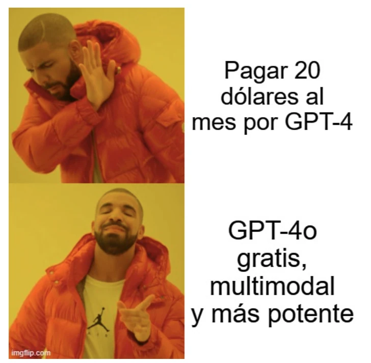

estrategIA #33 ·
Un lanzamiento cambia la comparación
El contexto
La llegada de GPT-4o se representa como un cambio brusco en las expectativas sobre precio y capacidades. La comparación pertenece al momento del lanzamiento, en mayo de 2024, y acompaña el número sobre la competencia entre Google y OpenAI.
Publicado en: estrategIA #33: Google vs OpenAI: una semana de innovación y desafíos en el mundo de la inteligencia artificial
Leer el texto de la imagen
Pagar 20 dólares al mes por GPT-4 GPT-4o gratis, multimodal y más potente
Marca de la herramienta visible en el original: imgflip.com.